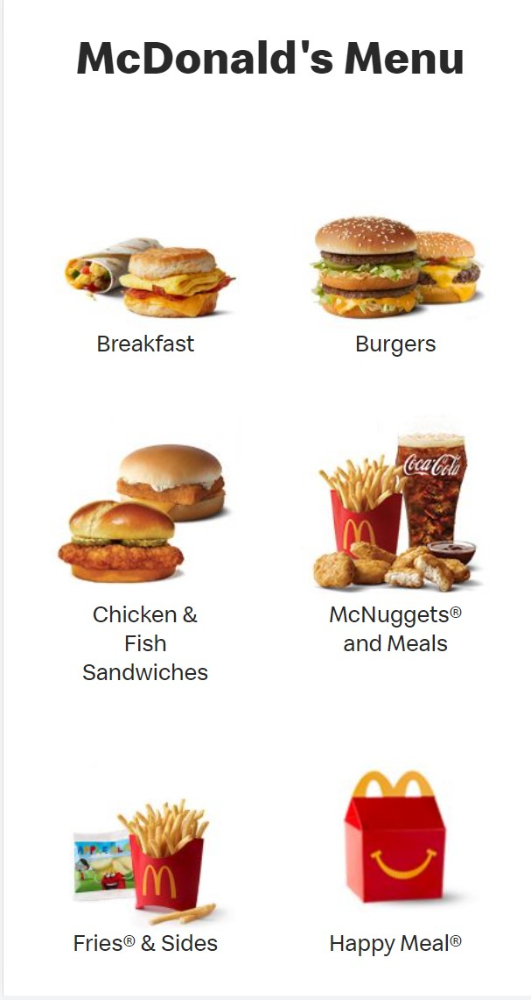
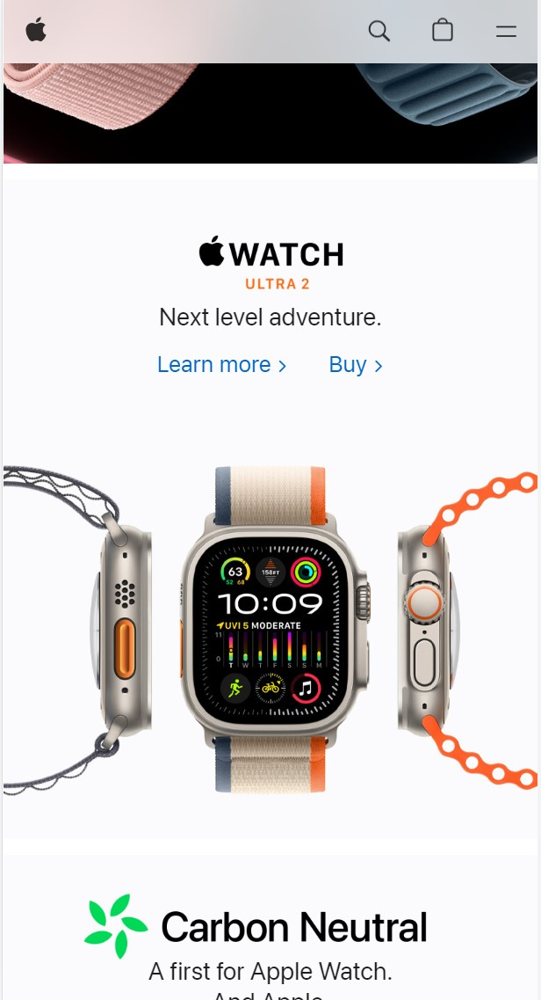
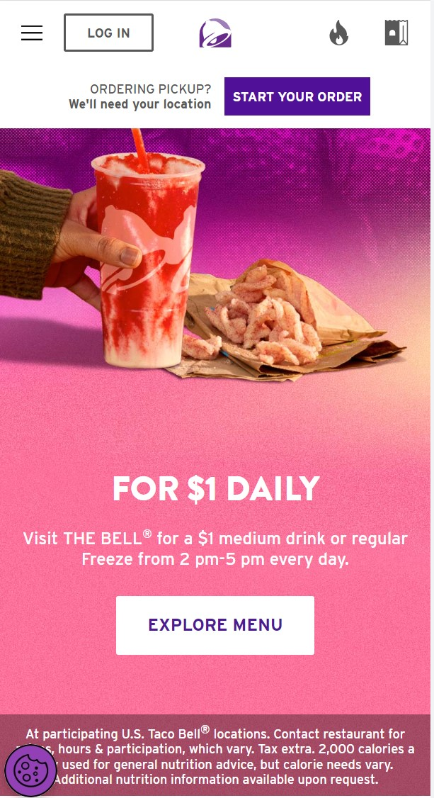

Alignment
McDonald's
mcdonalds.com The McDonald's menu website displays very good alignment because each menu item is displayed within its own box. The page is broken up into two column, which each column containing the menu items. The menu items are each aligned in center of each column, with the same amount of space between each item. The resulting webpage looks very well organized and is easy to understand.
White Space and Clean Design
Apple
apple.com The homepage of the Apple website displays an excellent use of white space as they display their most popular products. The prouct that is being displayed is showcased with minimal text, and the whitespace helps to make the product pop out more to the reader. Overall, the use of whitespace in the website helps make the Apple products stand out more on the page.
Contrast
Taco Bell
tacobell.com The homepage of the Taco Bell website starts out by presenting you with colors that contrast very well and really draw the eye to whatever menu item they are trying to push. The pink background with white text really pop and pull the reader's attention to the website. Even the background with the food items being displayed have colors that contrast really well and pop out to the reader.